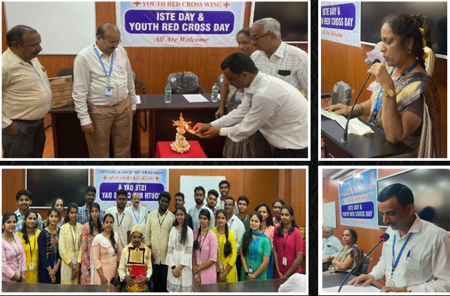

ISTE & Youth Red Cross Day
The ISTE chapter and Youth Red Cross Wing of P.E.S College of Engineering, Mandya, jointly organized the "ISTE & Youth Red Cross Day" on November 4th, 2022, in MBA Smart Classroom-2. This annual event aimed to recognize outstanding student volunteers within the ISTE & YRCW of the college, celebrating their dedication and achievements throughout the academic year.
Event Details
Dr. R M Mahalinge Gowda, the Principal of P.E.S College of Engineering, Mandya, and head of the Youth Red Cross Wing, graced the occasion as the chief guest. The former Chairman of the ISTE Faculty Chapter, Dr. B S Shivakumara, along with Dr. M N Veena, Chairman of the ISTE Faculty chapter, Dr. B Shanmukha, the Programme officer of YRCW, and Dr. Nayaka S R, Secretary/Treasurer of YRCW, were also present.
Event Highlights
The event began at 4:00 pm with the lighting of the lamp by the Principal and the executive officers of ISTE & YRCW. Notably, all 66 ISTE faculty members were invited, and the executive committee members of the ISTE Faculty chapter were present. Student winners of various competitions were honored with cash prizes and certificates, with ISTE Student Chapter members also in attendance.
Achievements and Initiatives
Dr. M N Veena welcomed everyone, extending warm greetings. Dr. Nayaka S R highlighted the ISTE PESCE Chapter's achievements, including the Best Faculty Chapter Awards in 2021 and 2022 and the Best Chapter Award secured by the ISTE PESCE Student Chapter in 2016. Dr. B Shanmukha discussed YRCW's initiatives, such as blood donation drives and social activities like Street Dog Feeding and Trekking organized during the academic year 2021-22.
Felicitation and Awards
A special felicitation ceremony honored by retired ISTE Chairman, Dr. B S Shivakumara, for his significant contributions. Dr. R M Mahalinge Gowda encouraged more technical events and personality development programs, emphasizing the importance of enhancing students skills for the corporate world. Outstanding students received the Best Student Award and the Best Service Award.
Conclusion
The event concluded with the distribution of cash prizes to the winners of various competitions. Student volunteers thanked faculty members, executive committee members, and winners for their contributions to the event's success.